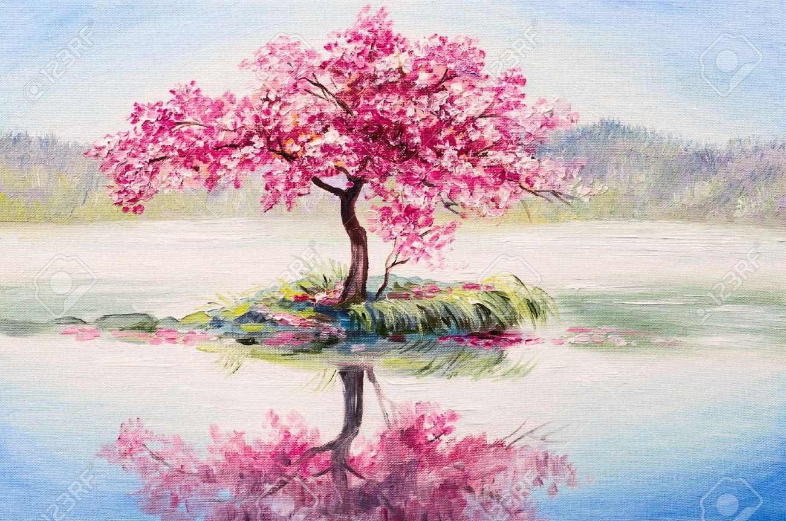
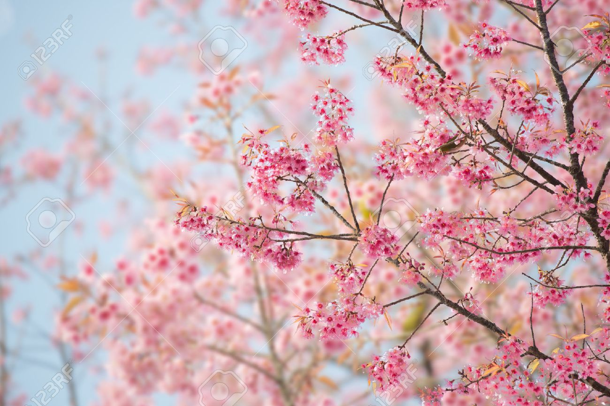
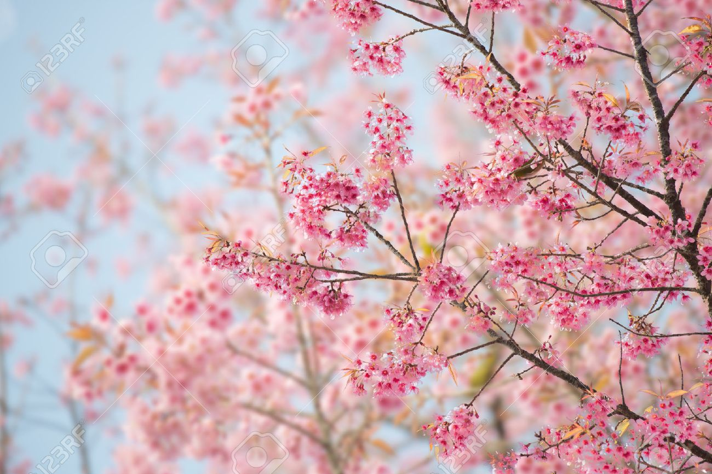

Sakura
Me And Japan
The description of the name of the "Japan" country is from this fact
It is pointed out that the Japanese island is from the mainland of China
Located at the eastern end, "Hinomoto (hidden)".
The titles of "modern" two laws are "Japan
Constitution "and" empire is the constitution of the Japanese empire ", but
There is the name of the country as "Japan" or "Japan" directly
Not specified system.
However, Japan Industrial Standards (Japanese Industrial Standards)
Specifies Japan and English notification is Japan. Further more,
In the International Standards (ISO), three letters short name JPNCO
Defined as two letters and short names jp.
